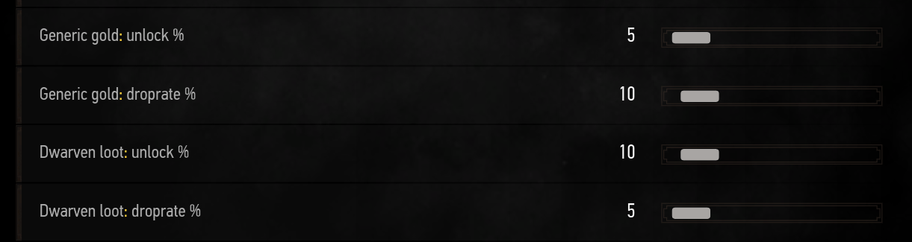

Random Encounters Reworked bible
Everything you need to know about RER
back to summary
Rewards
What would be the point of killing monsters, if you did not get any reward
for it. RER adds new trophies with the sole purpose of being sold so that
you can earn a few crowns from the monsters you killed. Because trophies
may not sell much with the economy altering mods you use, it also includes
an option for direct crown drops from creatures if you need it.
§Crowns
In the crown settings, you control the base values for each encounter type.
 And then for each creature you control how much of the base value they drop in %.
This value has some randomness you cannot edit, it varies by between 80% and 120%
of what you set. So if you set 50% to the Sirens it will in reality vary
between 40% and 60%
And then for each creature you control how much of the base value they drop in %.
This value has some randomness you cannot edit, it varies by between 80% and 120%
of what you set. So if you set 50% to the Sirens it will in reality vary
between 40% and 60%
 This allows you to tell RER that Sirens should drop few crowns and also control
the amount of crowns you get based on the encounter type. Some people do not
want crowns outside of contracts so they set the From ___ sliders to 0
except for the From contracts slider.
This allows you to tell RER that Sirens should drop few crowns and also control
the amount of crowns you get based on the encounter type. Some people do not
want crowns outside of contracts so they set the From ___ sliders to 0
except for the From contracts slider.
Then you can tweak the amount dropped on a per creature basis.
§Trophies
You can control from which encounters you get RER trophies with the first toggles.
Creatures from an encounter with the trophies disabled won't drop trophies.
 You can also change the price of the trophies you get, but note it is not
retroactive and won't change the price of the trophies you already picked.
You can also change the price of the trophies you get, but note it is not
retroactive and won't change the price of the trophies you already picked.

And finally, you can edit the chance for the creature to drop trophies.
100 means it has 100% chance to drop a trophy, 50
means 50% and 0 means no trophies drop this creature.

§Containers refill
RER has always been about revitalizing old content, or places. This feature
will refill the containers of regions where you kill monsters. It's a pretty simple
feature: you kill monsters, containers around you are filled with new loot.
Containers are: boxes, bags, chests, barrels, ...
Obvsiously we all have a different view of balance, this is why this feature
comes with a few (a lot of) sliders.
 But first, let's talk about the presets: the defaults preset
is applied automatically the first time you play with the mod; and second:
the OFF preset to disable the feature.
But first, let's talk about the presets: the defaults preset
is applied automatically the first time you play with the mod; and second:
the OFF preset to disable the feature.
 Now the main sliders:
Now the main sliders:
- chance to trigger allows you to define the chance for
it to happen every time you kill an encounter from RER. Note that it only works
for RER encounters.
- Only empty containers by default the feature only works
on containers that are empty to prevent filling the containers with tons
of stuff.
-
Radius, it controls how far around the player RER will
look for containers.
-
Number of containers tells the maximum number of containers that will
be refilled when this system triggers. It is not guaranteed to
reach this number if there are not enough containers around you.
 Each slider that starts with the little yellow dash is a loot table. Every
time this system triggers it will randomly pick one loot table for each
container (if you allowed more than one container per trigger) and then
fill the container with the objects from the loot table.
Each slider that starts with the little yellow dash is a loot table. Every
time this system triggers it will randomly pick one loot table for each
container (if you allowed more than one container per trigger) and then
fill the container with the objects from the loot table.
The values you set to these sliders control the chance for the loot table
to be picked. The value is like a ratio/coefficient, 15 doesn't
mean this loot table will have 15% chance to be picked. Instead it means
that it has half the chance to be picked compared to a 30.
§Killing spree loot
 This feature allows you to unlock new loot tables for the creatures spawned by RER.
It is tightly coupled to the ecosystem feature as it uses
the ecosystem strength to
determine what loot table is unlocked.
This feature allows you to unlock new loot tables for the creatures spawned by RER.
It is tightly coupled to the ecosystem feature as it uses
the ecosystem strength to
determine what loot table is unlocked.

The more you kill creatures in an area the more you affect the ecosystem strength,
then as the ecosystem strength percentage increases (or decreases if you use custom values)
you will progressively unlock new loot tables.
Each loot table in the menu has two sliders:
- The unlock %
- The drop rate %
The unlock % tells you at which point you will start seeing loot from this table,
if your ecosystem strength is at 150% and you table unlock % is
at 50% then it will be unlocked. The ecosystem strength starts
at 100% so 100 + 50 = 150, which is right.
The second slider controls the drop rate of that loot table once it is unlocked.
However there is an important detail, as the ecosystem strength increases the drop rate
increases too. This drop rate you set is multiplied by the ecosystem strength,
to keep the same example let's say you have an ecosystem strength at 150%,
if you loot table drop rate is 10% then it will actually be 150% of 10%, so 15%.
This is done to give you a reason to kill creature and increase the ecosystem strength
even after you reached your goal. That way you keep increasing the drop rate of all the
unlocked tables.